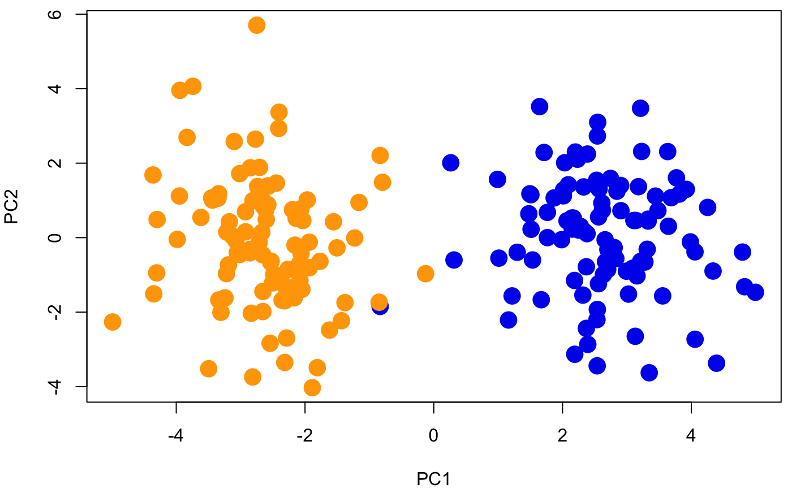
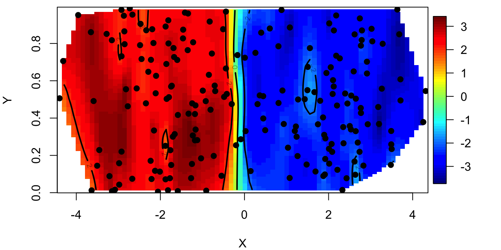
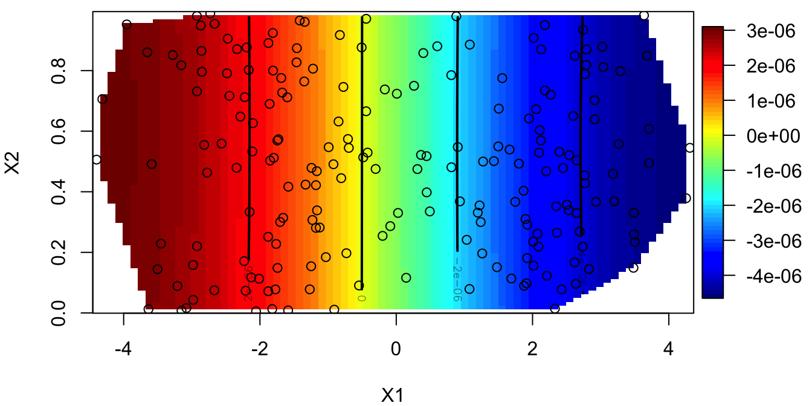
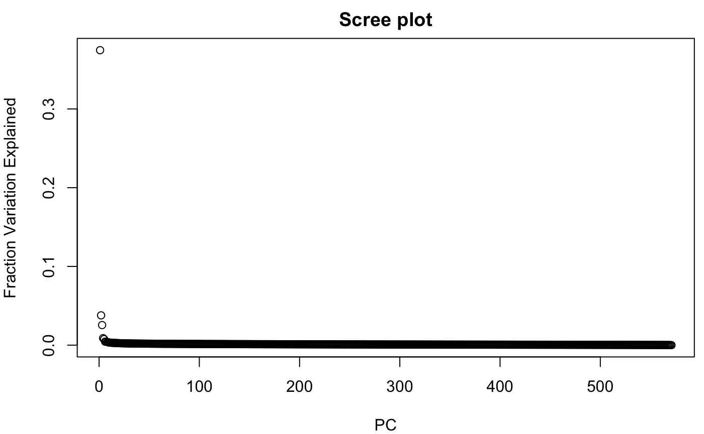
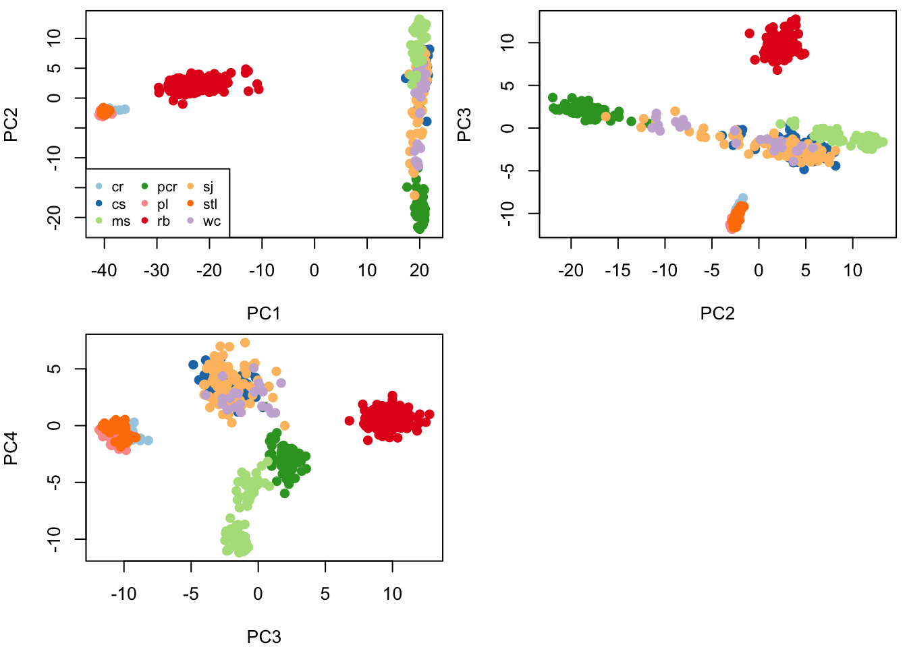
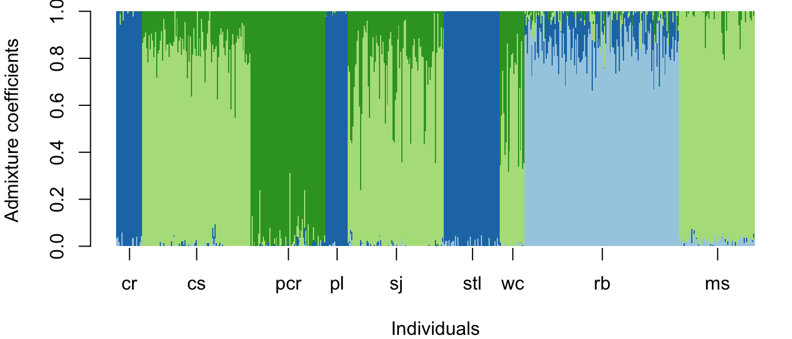
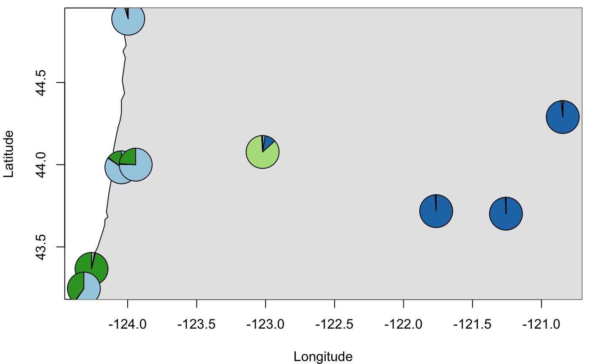

Week 9: Population Structure
Sean Schoville
2020-06-08
Week9_vignette.Rmd1. Overview of Worked Example
a) Goals
The goals of this lab are to:
- Assess how patterns of genetic variation can be used to delimit natural populations.
- Compare methods that assess population structure.
- Understand how population structure can be used to interpret biogeographic history.
b) Data sets
All files are distributed as system files with the ‘LandGenCourse’ package (folder ‘extdata’).
- Simulated data using the two-island model and admixture model.
- SNP data from Catchen et al. 2013 Catchen et al. 2013. The population structure and recent colonization history of Oregon threespine stickleback determined using restriction-site associated DNA-sequencing. Molecular Ecology 22:1365-294X. http://dx.doi.org/10.1111/mec.12330
c) Required R libraries
All required packages should have been installed already when you installed ‘LandGenCourse’.
Note: the function ‘library’ will always load the package, even if it is already loaded, whereas ‘require’ will only load it if it is not yet loaded. Either will work.
require(LandGenCourse) #require(fields) #require(RColorBrewer) #require(maps) #require(mapplots) #require(here)
The package ‘LEA’ is available from the ‘Bioconductor’ repository. Also, package ‘fields’ was not installed with ‘LandGenCourse’ automatically due to compatibility issues.
if(!requireNamespace("fields", quietly = TRUE)) install.packages("fields", repos='http://cran.us.r-project.org') if(!requireNamespace("LEA", quietly = TRUE)) { if (!requireNamespace("BiocManager", quietly = TRUE)) install.packages("BiocManager") BiocManager::install("LEA") }
##
## The downloaded binary packages are in
## /var/folders/kz/fv8pzy0d3cl_mp3md294cvbh0000gn/T//RtmpljQKRi/downloaded_packages2. Simulated data: 2-island model
We simulated data under a classic two-island model, using the coalescent simulation program ‘ms’, developed by Richard Hudson. The program simulates a coalescent tree under various demographic models, and uses those trees to create allelic data. For those interested in using ‘ms’, the source code is available here: http://home.uchicago.edu/rhudson1/source/mksamples.html
We simulated 200 haploid individuals genotyped at 100 loci. The effective mutation rate was ‘μ = 0.5’. We sampled 2 islands with 100 individuals in each. The effective migration rate was ‘Nm 2’ (‘N’ is the effective size in each of the two island, ‘m’ is the bidirectional rate of gene flow).
Our ms command was as follows: ms 200 100 -t .5 -I 2 100 100 -ma x 2 2 x > dataNm2.txt
These raw data need to be converted in a format amenable to statistical analyses in R.
a) Import data
file <- scan(file = system.file("extdata", "dataNm2.txt", package = "LandGenCourse"), what ="character", sep="\n", skip = 2) genotype <- NULL for(locus in 1:100){ res.locus <- file[4:203] file <- file[-(1:203)] genotype <- cbind(genotype, as.numeric(as.factor(res.locus)))} dim(genotype)
## [1] 200 100Now we have a new data file, genotype, loaded in R. This file contains 200 rows and 100 columns. Each row corresponds to a simulated individual. The columns code for their multi-locus genotypes.
b) Perform Principal Components Analysis (PCA)
Our first objective is to use ordination (Principal components analysis, or PCA) to examine population structure for the Nm = 2 data set.
The R command for PCA is fairly simple and fast:
pc = prcomp(genotype, scale =T)
In order to visualize how the first two eigenvectors capture genotype variation, we will color each population.

Question 1:
- Is population structure (genetic differentiation) evident?
- How much of the genetic variance can be explained by our first two components?
To answer the second part of this question, use:
summary(pc)
## Importance of components:
## PC1 PC2 PC3 PC4 PC5 PC6 PC7
## Standard deviation 2.77699 1.65283 1.5587 1.53452 1.48944 1.48496 1.46718
## Proportion of Variance 0.07712 0.02732 0.0243 0.02355 0.02218 0.02205 0.02153
## Cumulative Proportion 0.07712 0.10443 0.1287 0.15228 0.17446 0.19651 0.21804
## PC8 PC9 PC10 PC11 PC12 PC13 PC14
## Standard deviation 1.43774 1.41957 1.40980 1.40041 1.38541 1.37335 1.35879
## Proportion of Variance 0.02067 0.02015 0.01988 0.01961 0.01919 0.01886 0.01846
## Cumulative Proportion 0.23871 0.25886 0.27874 0.29835 0.31754 0.33640 0.35487
## PC15 PC16 PC17 PC18 PC19 PC20 PC21
## Standard deviation 1.35395 1.31441 1.3078 1.30115 1.29493 1.26846 1.26525
## Proportion of Variance 0.01833 0.01728 0.0171 0.01693 0.01677 0.01609 0.01601
## Cumulative Proportion 0.37320 0.39048 0.4076 0.42451 0.44128 0.45737 0.47338
## PC22 PC23 PC24 PC25 PC26 PC27 PC28
## Standard deviation 1.23786 1.23212 1.22814 1.20358 1.18924 1.17923 1.17139
## Proportion of Variance 0.01532 0.01518 0.01508 0.01449 0.01414 0.01391 0.01372
## Cumulative Proportion 0.48870 0.50388 0.51896 0.53345 0.54759 0.56150 0.57522
## PC29 PC30 PC31 PC32 PC33 PC34 PC35
## Standard deviation 1.16216 1.12304 1.10610 1.10157 1.09177 1.07816 1.05735
## Proportion of Variance 0.01351 0.01261 0.01223 0.01213 0.01192 0.01162 0.01118
## Cumulative Proportion 0.58873 0.60134 0.61357 0.62571 0.63763 0.64925 0.66043
## PC36 PC37 PC38 PC39 PC40 PC41 PC42
## Standard deviation 1.04793 1.02672 1.01936 1.01364 1.00225 0.99349 0.98594
## Proportion of Variance 0.01098 0.01054 0.01039 0.01027 0.01005 0.00987 0.00972
## Cumulative Proportion 0.67141 0.68195 0.69235 0.70262 0.71267 0.72254 0.73226
## PC43 PC44 PC45 PC46 PC47 PC48 PC49
## Standard deviation 0.96673 0.96357 0.9485 0.94380 0.92308 0.91570 0.90220
## Proportion of Variance 0.00935 0.00928 0.0090 0.00891 0.00852 0.00839 0.00814
## Cumulative Proportion 0.74160 0.75089 0.7599 0.76879 0.77731 0.78570 0.79384
## PC50 PC51 PC52 PC53 PC54 PC55 PC56
## Standard deviation 0.89163 0.88277 0.86488 0.84941 0.83872 0.83328 0.82304
## Proportion of Variance 0.00795 0.00779 0.00748 0.00721 0.00703 0.00694 0.00677
## Cumulative Proportion 0.80179 0.80958 0.81706 0.82427 0.83131 0.83825 0.84503
## PC57 PC58 PC59 PC60 PC61 PC62 PC63
## Standard deviation 0.81748 0.80746 0.79085 0.77042 0.76650 0.76104 0.7553
## Proportion of Variance 0.00668 0.00652 0.00625 0.00594 0.00588 0.00579 0.0057
## Cumulative Proportion 0.85171 0.85823 0.86448 0.87042 0.87629 0.88209 0.8878
## PC64 PC65 PC66 PC67 PC68 PC69 PC70
## Standard deviation 0.72978 0.7279 0.72353 0.70575 0.69818 0.68517 0.68335
## Proportion of Variance 0.00533 0.0053 0.00523 0.00498 0.00487 0.00469 0.00467
## Cumulative Proportion 0.89312 0.8984 0.90365 0.90863 0.91351 0.91820 0.92287
## PC71 PC72 PC73 PC74 PC75 PC76 PC77
## Standard deviation 0.67501 0.65756 0.63896 0.62114 0.61388 0.60925 0.60217
## Proportion of Variance 0.00456 0.00432 0.00408 0.00386 0.00377 0.00371 0.00363
## Cumulative Proportion 0.92743 0.93175 0.93583 0.93969 0.94346 0.94717 0.95080
## PC78 PC79 PC80 PC81 PC82 PC83 PC84
## Standard deviation 0.58408 0.56742 0.55817 0.54962 0.53610 0.52625 0.52442
## Proportion of Variance 0.00341 0.00322 0.00312 0.00302 0.00287 0.00277 0.00275
## Cumulative Proportion 0.95421 0.95743 0.96054 0.96356 0.96644 0.96921 0.97196
## PC85 PC86 PC87 PC88 PC89 PC90 PC91
## Standard deviation 0.50528 0.49755 0.4798 0.46734 0.45256 0.44882 0.44121
## Proportion of Variance 0.00255 0.00248 0.0023 0.00218 0.00205 0.00201 0.00195
## Cumulative Proportion 0.97451 0.97699 0.9793 0.98147 0.98352 0.98554 0.98748
## PC92 PC93 PC94 PC95 PC96 PC97 PC98
## Standard deviation 0.41786 0.41163 0.39781 0.37758 0.36923 0.36602 0.34913
## Proportion of Variance 0.00175 0.00169 0.00158 0.00143 0.00136 0.00134 0.00122
## Cumulative Proportion 0.98923 0.99092 0.99251 0.99393 0.99529 0.99663 0.99785
## PC99 PC100
## Standard deviation 0.34128 0.31336
## Proportion of Variance 0.00116 0.00098
## Cumulative Proportion 0.99902 1.00000Next we would like to see how population genetic structure relates to geographic space. To this aim, we could display PC maps. A PC map is a spatial interpolation of a particular component. Let’s map PC 1.
c) Create synthetic spatial coordinates (X,Y) and map them
par(mar=c(4,4,0.5,0.5)) coord <- cbind(sort(c(rnorm(100, -2, 1), rnorm(100, 2, 1))), runif(200)) fit <- fields::Krig(coord, pc$x[,1], m=1) fields::surface(fit) points(coord, pch=19)

This map predicts the value of the first principal component at each location in our study area. We observe that the study area is partitioned into two zones that correspond to the 2 clusters visible from PC 1. We have superimposed individual sample sites to see our species distribution.
To check that the PC map is consistent with having 2 islands, we can examine the PC assignment vs the sampling location. Remember that, in the data sets, the 100 first individuals were sampled from island 1 and the last 100 were sampled from island 2. We compare these assignments to the PCA classification as follows.
table((pc$x[,1] > 0) == (1:200 <= 100))
##
## FALSE TRUE
## 1 199In this example, we found that only one individual was not assigned to its island of origin. Well, this individual might be a migrant from the last generation. These results indicated that a very simple method based on principal component analysis can correctly describe spatial population genetic structure.
Question 2: Does PCA provide an accurate description of population genetic structure when the genetic differentiation between the 2 islands is less pronounced?
To answer this question, re-run the first analytical steps up to PCA for data simulated with Nm = 10 (a higher value of gene flow), which is stored in datafile “dataNm10.txt”. This was generated with the following ms command:
ms 200 100 -t .5 -I 2 100 100 -ma x 10 10 x > dataNm10.txt
You can import the file as:
file <- scan(file = system.file("extdata", "dataNm10.txt", package = "LandGenCourse"), what ="character", sep="\n", skip = 2)
3. Simulated data: 2-island model with admixture
2-island model
A 2-island model is a relatively simple scenario and unlikely to capture the variation we will see in empirical studies. Will our very basic assignment method based on PCA hold up to more complex scenarios?
Let’s consider a scenario where the 2 populations had been evolving for a long time under an equilibrium island model, and then their environment suddenly changed. Our 2 populations had to move to track their shifting habitat, and after these movements they come into contact in an intermediate region. This contact event resulted in an admixed population with the density of mixed individuals greater in the center of the contact zone than at the ancestral origins at the edges of the landscape.
Using R and our previous simulation, a multi-locus cline that resumes this scenario can be simulated has follows. The source population data are in the file “dataNm1.str”.
First we define a function for the shape of a cline:
# A function for the shape of a cline sigmoid <- function(x){ 1/(1 + exp(-x))} p1 <- sigmoid( 0.5 * coord[,1])
Our admixed genotypes are built from a 2 island model with low gene flow (Nm=1)
genotype = read.table(file = system.file("extdata", "dataNm1.str", package = "LandGenCourse"))[,-(1:2)] admixed.genotype <- matrix(NA, ncol = 100, nrow = 200) for (i in 1:100){ for (j in 1:100) admixed.genotype[i,j] = sample( c(genotype[i, j],genotype[i+100, j]), 1, prob = c(p1[i], 1 - p1[i]) )} for (i in 101:200){ for (j in 1:100) admixed.genotype[i,j] = sample( c(genotype[i - 100, j],genotype[i, j]), 1, prob = c(p1[i], 1 - p1[i]) )} res <- data.frame(coord, admixed.genotype)
Now our data set is the R object ‘res’. The next exercise is to apply PCA to these data to evaluate how geographical genetic variation can be captured by this approach. In comparison with the previous example where we had two geographically discrete populations, we now have a “continuous” population in a landscape. Geographical genetic variation is thus expected to be more gradual than in the previous example. Generate and examine the PC 1 map.
par(mar=c(4,4,0.5,0.5)) pcA = prcomp(admixed.genotype, scale =T) plot(pcA$x, pch = 19, cex = 2, col = rep(c("blue2","orange"), each = 100))

Look at the PC Map
## Warning:
## Grid searches over lambda (nugget and sill variances) with minima at the endpoints:
## (REML) Restricted maximum likelihood
## minimum at right endpoint lambda = 0.05291003 (eff. df= 190 )
Question 3: How does admixture change our prediction of population structure (PCA plot)? Is genomic ancestry correlated with geographical location?
To answer this latter part, check the R2 and significance of statistical association between PC1 component scores and geographical position (p1):
##
## Call:
## lm(formula = pcA$x[, 1] ~ p1)
##
## Residuals:
## Min 1Q Median 3Q Max
## -3.6667 -0.7109 -0.0795 0.7629 2.5773
##
## Coefficients:
## Estimate Std. Error t value Pr(>|t|)
## (Intercept) 3.8364 0.1808 21.22 <2e-16 ***
## p1 -7.6056 0.3238 -23.49 <2e-16 ***
## ---
## Signif. codes: 0 '***' 0.001 '**' 0.01 '*' 0.05 '.' 0.1 ' ' 1
##
## Residual standard error: 1.097 on 198 degrees of freedom
## Multiple R-squared: 0.7359, Adjusted R-squared: 0.7346
## F-statistic: 551.7 on 1 and 198 DF, p-value: < 2.2e-164. Empirical data: Threespine sticklebacks
The Threespine stickleback (Gasterosteus aculeatus) is a fish that has emerged as a model of rapid and parallel adaptation. Catchen et al. (2013) were interested in how populations colonize freshwater habitats in the Pacific Northwest, USA. These sticklebacks have diversified into three life history forms, one exclusively dwelling in the ocean, another being adapted to freshwater habitats, and one unusual population that can utilize both habitats. It was unclear if this one particular population (Riverbend), from a stream in central Oregon, was introduced due to unintentional human transport, and if this could be an example of rapid adaptation to freshwater from oceanic populations. Single nucleotide polymorphism data were generated using genotyping-by-sequencing, for 9 populations occupying coastal areas and inland streams.
Map
In this tutorial, we will analyze the genetic data generated by Catchen et al. (2013) using a few exploratory methods to quantify and visualize genetic differentiation among the stickleback populations sampled. By the end of this tutorial, hopefully you will be able to make a convincing argument for the regional origin of the recently-introduced inland stickleback population.
a) Import the data:
data <- read.table(system.file("extdata", "stickleback_data.txt", package = "LandGenCourse"), sep="\t", as.is=T, check.names=F)
Create a list of population IDs:
pops <- unique(unlist(lapply(rownames(data), function(x){y<-c();y<-c(y,unlist(strsplit(x,"_")[[1]][1]))})))
To understand the experimental design a bit better, let’s look at the sample size at each site.
sample_sites <- rep(NA,nrow(data)) for (i in 1:nrow(data)){ sample_sites[i] <- strsplit(rownames(data),"_")[[i]][1]} N <- unlist(lapply(pops,function(x){length(which(sample_sites==x))})) names(N) <- pops N
## cr cs pcr pl sj stl wc rb ms
## 23 97 67 20 86 50 22 138 68b) Examine population structure with PCA
Let’s start examining population structure, first using PCA. We’ll look at the amount of variation explained in the first few components, and then we’ll plot individuals for four components, coloring them by population.
par(mar=c(4,4,2,0.5)) pcaS <- prcomp(data,center=T) plot(pcaS$sdev^2 / sum(pcaS$sdev^2), xlab="PC", ylab="Fraction Variation Explained", main="Scree plot")

Get % variance explained for first few PCs:
perc <- round(100*(pcaS$sdev^2 / sum(pcaS$sdev^2))[1:10],2) names(perc) <- apply(array(seq(1,10,1)), 1, function(x){paste0("PC", x)}) perc
## PC1 PC2 PC3 PC4 PC5 PC6 PC7 PC8 PC9 PC10
## 37.47 3.78 2.55 0.88 0.76 0.44 0.44 0.39 0.37 0.32Use the RColorBrewer package to select a color palette:
colors <- RColorBrewer::brewer.pal(9, "Paired")
Plot first three PCs with colored symbols:
par(mfrow=c(2,2), mar=c(4,4,0.5,0.5)) plot(pcaS$x[,1:2], col=colors[factor(sample_sites)], pch=16,cex=1.2) legend("bottomleft", legend=levels(factor(sample_sites)), col=colors, pch=16, ncol=3, cex=0.8) plot(pcaS$x[,2:3], col=colors[factor(sample_sites)], pch=16, cex=1.2) plot(pcaS$x[,3:4], col=colors[factor(sample_sites)], pch=16, cex=1.2)

Question 4:
- Do you see evidence of population structure?
- Is the number of components (here 4) a good representation of the number of populations?
c) Clustering with SNMF (similar to ‘STRUCTURE’)
Now we are going to use a clustering method to examine population structure. There are many approaches, with various assumptions, and it is important to consider the underlying biology of your research organism (and your dataset size) before choosing an appropriate method.
Here, we will use sparse negative matrix factorization (SNMF) because it is fast to compute for large datasets and it approximates the results of the well-known STRUCTURE algorithm. Notably, it relaxes population genetic assumptions such as Hardy-Weinberg proportions, so it may not converge on the same results as other programs.
We can use SNMF to estimate the number of genetic clusters (K) among our sampled populations. However, this may take a long time. If you want to run the analysis, un-comment the lines by removing the ‘#’ symbol at the beginning of each line.
We use SNMF’s cross-entropy criterion to infer the best estimate of K. The lower the cross-entropy, the better our model accounts for population structure. Sometimes cross-entropy continues to decline, so we might choose K where cross entropy first decreases the most.
#snmf2 <- LEA::snmf(paste0(here::here(), "/data/stickleback.geno"),
# K=1:8, ploidy=2, entropy=T, alpha=100, project="new")
#snmf2 <- LEA::snmf("stickleback.geno", K=1:8, ploidy=2, entropy=T,
# alpha=100, project="new")
#par(mfrow=c(1,1))
#plot(snmf2, col="blue4", cex=1.4, pch=19)INSERT FIGURE WITH RESULT?
The number of clusters is hard to determine, but four seems to be important and is similar to the results revealed by PCA. I will proceed assuming K=4. We will rerun SNMF using this setting.
K=4 snmf = LEA::snmf(system.file("extdata", "stickleback.geno", package = "LandGenCourse"), K = K, alpha = 100, project = "new")
## The project is saved into :
## DUn/temp_libpath2c3f6a792c50/LandGenCourse/extdata/stickleback.snmfProject
##
## To load the project, use:
## project = load.snmfProject("DUn/temp_libpath2c3f6a792c50/LandGenCourse/extdata/stickleback.snmfProject")
##
## To remove the project, use:
## remove.snmfProject("DUn/temp_libpath2c3f6a792c50/LandGenCourse/extdata/stickleback.snmfProject")
##
## [1] "*************************************"
## [1] "* sNMF K = 4 repetition 1 *"
## [1] "*************************************"
## summary of the options:
##
## -n (number of individuals) 571
## -L (number of loci) 10000
## -K (number of ancestral pops) 4
## -x (input file) /private/var/folders/kz/fv8pzy0d3cl_mp3md294cvbh0000gn/T/RtmpwBqDUn/temp_libpath2c3f6a792c50/LandGenCourse/extdata/stickleback.geno
## -q (individual admixture file) /private/var/folders/kz/fv8pzy0d3cl_mp3md294cvbh0000gn/T/RtmpwBqDUn/temp_libpath2c3f6a792c50/LandGenCourse/extdata/stickleback.snmf/K4/run1/stickleback_r1.4.Q
## -g (ancestral frequencies file) /private/var/folders/kz/fv8pzy0d3cl_mp3md294cvbh0000gn/T/RtmpwBqDUn/temp_libpath2c3f6a792c50/LandGenCourse/extdata/stickleback.snmf/K4/run1/stickleback_r1.4.G
## -i (number max of iterations) 200
## -a (regularization parameter) 100
## -s (seed random init) 140391043595086
## -e (tolerance error) 1E-05
## -p (number of processes) 1
## - diploid
##
## Read genotype file /private/var/folders/kz/fv8pzy0d3cl_mp3md294cvbh0000gn/T/RtmpwBqDUn/temp_libpath2c3f6a792c50/LandGenCourse/extdata/stickleback.geno: OK.
##
##
## Main algorithm:
## [ ]
## [============]
## Number of iterations: 33
##
## Least-square error: 722698.119383
## Write individual ancestry coefficient file /private/var/folders/kz/fv8pzy0d3cl_mp3md294cvbh0000gn/T/RtmpwBqDUn/temp_libpath2c3f6a792c50/LandGenCourse/extdata/stickleback.snmf/K4/run1/stickleback_r1.4.Q: OK.
## Write ancestral allele frequency coefficient file /private/var/folders/kz/fv8pzy0d3cl_mp3md294cvbh0000gn/T/RtmpwBqDUn/temp_libpath2c3f6a792c50/LandGenCourse/extdata/stickleback.snmf/K4/run1/stickleback_r1.4.G: OK.
##
## The project is saved into :
## DUn/temp_libpath2c3f6a792c50/LandGenCourse/extdata/stickleback.snmfProject
##
## To load the project, use:
## project = load.snmfProject("DUn/temp_libpath2c3f6a792c50/LandGenCourse/extdata/stickleback.snmfProject")
##
## To remove the project, use:
## remove.snmfProject("DUn/temp_libpath2c3f6a792c50/LandGenCourse/extdata/stickleback.snmfProject")d) Plot ancestry proportions
Create matrix of ancestry proportions:
qmatrix = LEA::Q(snmf, K = K)
Plot results with a barplot similar to that used to represent STRUCTURE results
par(mar=c(4,4,0.5,0.5)) barplot(t(qmatrix), col=RColorBrewer::brewer.pal(9,"Paired"), border=NA, space=0, xlab="Individuals", ylab="Admixture coefficients") #Add population labels to the axis: for (i in 1:length(pops)){ axis(1, at=median(which(sample_sites==pops[i])), labels=pops[i])}

e) Visualize admixture proportions on a map
Import geographical coordinates for the populations:
sites <- read.csv(system.file("extdata", "stickleback_coordinates.csv", package = "LandGenCourse"), as.is=T, check.names=F, h=T)
Calculate population average ancestry proportions and create an array with population coordinates:
#initialize array for ancestry proportions: qpop <- matrix(NA,nrow=length(pops),ncol=K) #intialize array for coordinates: coord.pop <- matrix(NA,nrow=length(pops),ncol=2) index=0 for (i in 1:length(pops)){ if (i==1){ # input pop ancestry proportions for each K cluster: qpop[i,] <- apply(qmatrix[1:N[i],], 2, mean) #input pop coordinates: coord.pop[i,1] <- sites[which(sites[,1]==names(N[i])),6] #input pop coordinates: coord.pop[i,2] <- sites[which(sites[,1]==names(N[i])),5] index = index + N[i] } else { qpop[i,] <- apply(qmatrix[(index+1):(index+N[i]),], 2, mean) coord.pop[i,1] <- sites[which(sites[,1]==names(N[i])),6] coord.pop[i,2] <- sites[which(sites[,1]==names(N[i])),5] index = index + N[i] } }
Create map with pie charts depicting ancestry proportions:
par(mar=c(4,4,0.5,0.5)) plot(coord.pop, xlab = "Longitude", ylab = "Latitude", type = "n") maps::map(database='state',add = T, col = "grey90", fill = TRUE) for (i in 1:length(pops)){ mapplots::add.pie(z=qpop[i,], x=coord.pop[i,1], y=coord.pop[i,2], labels="", col=RColorBrewer::brewer.pal(K,"Paired"),radius=0.1) }

Question 5:
- How does the pattern of clustering vary in space?
- Is there evidence of population admixture?
- How do you interpret this pattern biologically?
Question 6:
- Based on the analyses done in this tutorial, where do you hypothesize the “Riverbend” (“rb”) population originated from?
- What evidence supports your rationale?